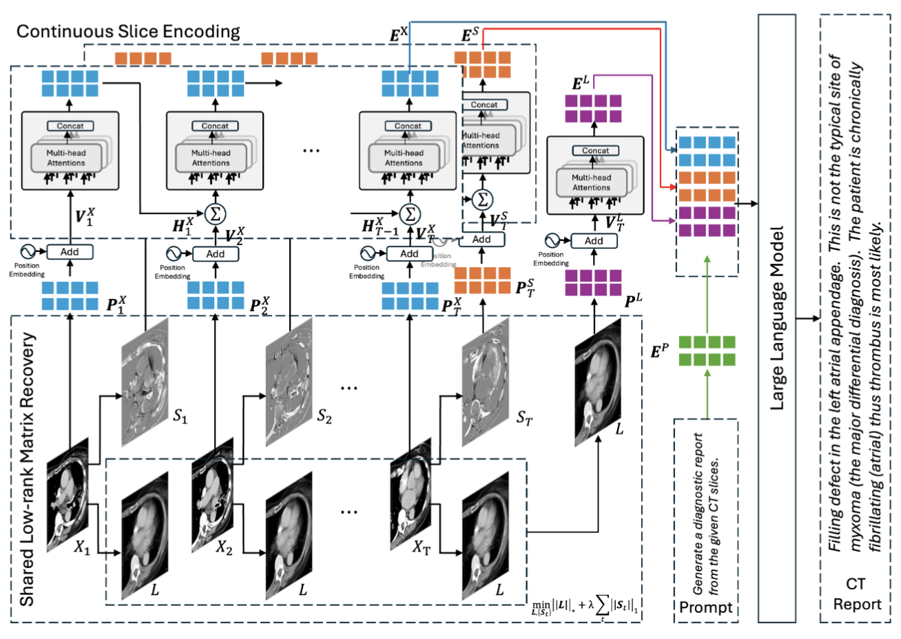
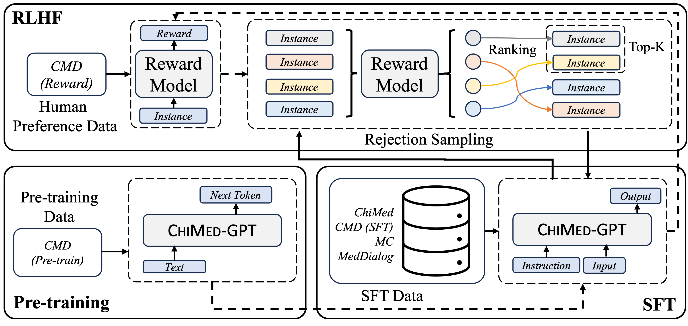
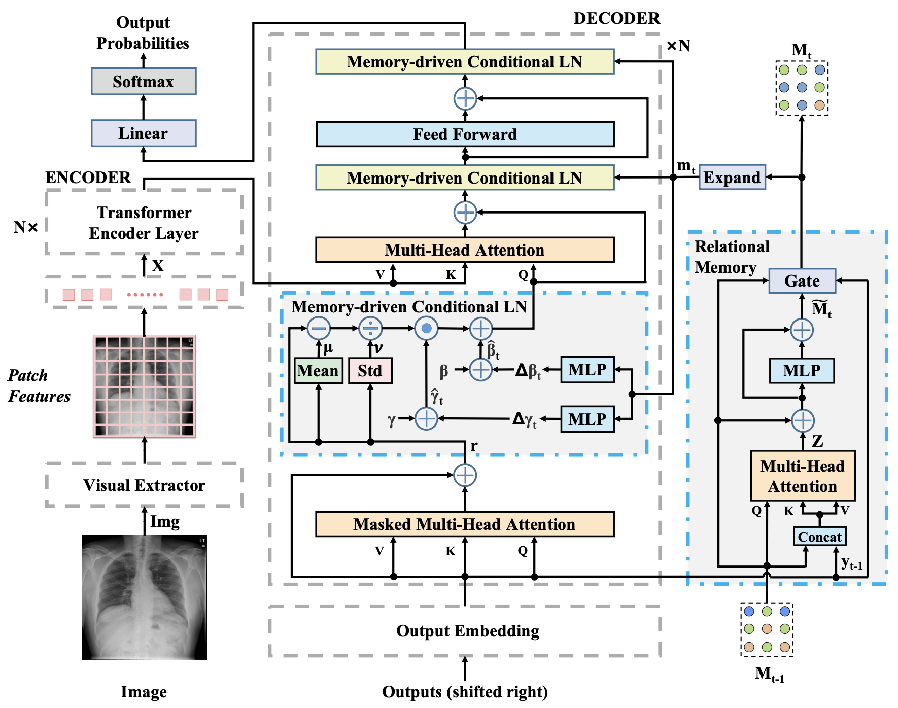

Medical imaging & reporting.
We connect X-ray and CT representations with report text through memory mechanisms, cross-modal alignment and three-dimensional feature modeling, and study visual question answering over volumetric images.
Medical AI research at MIX Lab
We connect medical language, vision and knowledge to build better ways of representing information, understanding images and generating reports.

01 / Our research
Medical information spans conversations, specialist terminology, images and long-form reports. Our research studies how to organize these signals, capture their meaning and connect them across modalities.
Led by Yan Song and developed with collaborators, this body of work brings together medical language resources, knowledge-aware methods and visual–language modeling.
We connect X-ray and CT representations with report text through memory mechanisms, cross-modal alignment and three-dimensional feature modeling, and study visual question answering over volumetric images.
Our text-focused research covers biomedical entity recognition, disease phrase matching, language inference, medical dialogue and report summarization, and knowledge-enhanced reasoning over medical records.
We develop Chinese medical language models and the resources that support them, including question-answering corpora, terminology annotations, instruction data and preference data.
02 / Selected projects
Three connected research areas, each with its own summary, representative projects and links to the underlying papers and repositories.
01 / RESEARCH AREA
Images into language. Evidence into reports.
Memory-driven report generation, cross-modal alignment and volumetric CT understanding connect visual evidence with medical descriptions.
Shared low-rank matrix recovery separates common background information from distinct CT features, combining continuous slice encoding with visual representations to condition language models for volumetric report generation.
R2Gen combines a relational memory with memory-driven conditional layer normalization, incorporating information accumulated during generation into a Transformer decoder to produce extended radiology reports from chest images.
02 / RESEARCH AREA
Understanding the information in medical text.
Text-focused methods identify medical entities, understand meaning, summarize conversations and reports, and connect medical records with structured knowledge.
BioKMNER uses key-value memory networks to select syntactic information for biomedical named entity recognition, combining contextual features with linguistic structure to identify diseases, chemicals, genes, and species.
A hierarchical approach identifies important utterances in medical conversations and uses their representations to organize summaries around patient problems and physician responses, connecting dialogue structure with summary content.
03 / RESEARCH AREA
The models and data behind medical language intelligence.
The ChiMed family connects medical corpora and terminology resources with domain pretraining, instruction learning and preference alignment.
ChiMed-GPT combines continued pretraining, supervised instruction tuning, and preference alignment for Chinese medical language modeling, with evaluations spanning information extraction, question answering, and medical dialogue generation.
ChiMST annotates word boundaries and fine-grained medical terms in Chinese medical question answering text, providing a shared resource for studying segmentation and terminology recognition within the same corpus.



A continuing research journey
Each line of work builds on a shared interest in how medical information is represented, understood and generated.
AMed and COSTA study medical conversations. ChiMed organizes Chinese medical questions and answers.
Biomedical entity recognition, ChiMST, R2Gen and CMN connect language structure with medical tasks.
ChiMed-GPT, R2-LLM and knowledge-enhanced methods explore domain learning and medical generation.
CT feature decomposition, extractive reporting and public work on CT state modeling extend the research to three dimensions.
03 / Publications & resources
Explore work by topic, year or keyword. Follow the paper for the full method and evaluation, or go straight to an available codebase.
Publications and publicly available manuscripts. Preprint, accepted and manuscript statuses are labeled separately.
15 works
This approach represents CT slices and question tokens as a cross-modal graph, combining information about slice continuity and question content to generate answers to questions about volumetric images.
Memory-based cross-modal representations support an extractive approach to radiology reporting, selecting and organizing report content through learned image-text associations rather than relying exclusively on generating each successive token.
Shared low-rank matrix recovery separates common background information from distinct CT features, combining continuous slice encoding with visual representations to condition language models for volumetric report generation.
LEAD incorporates multiple expert pathology features across decoder layers, studying how layer-wise expert alignment can connect image evidence with the text produced during radiology report generation by multimodal models.
On-demand instance-wise adaptation selects relevant training examples for each test image and adapts a language model at inference time, using pathology matching and contrasting instances to guide radiology reporting.
SliceWorld models anatomical, lesion, and uncertainty states across CT slice sequences, connecting future feature prediction and latent interventions with language generation to study predictive and controllable CT reporting.
Recurrent visual encoding tracks ordered CT slices while stereo attention combines hierarchical visual features, providing a language model with representations for generating reports from three-dimensional CT examinations.
R2-LLM adapts a general language model to radiology report generation through in-domain instance induction and coarse-to-fine decoding, connecting retrieved examples with successive stages of report refinement.
ControlDiff uses task-specific visual and textual information to construct noise for diffusion networks, studying how iterative denoising can organize global and local content when generating radiology reports.
D²-Net combines diffusion-based generation with a discriminative mechanism for radiology reporting, examining how these complementary modeling components can guide the production of textual descriptions from medical image inputs.
SeMDiff predicts semantic concepts and refines their representations through conditional memory to guide diffusion-based long text generation, including experiments on describing medical images alongside general image description tasks.
This systematic review organizes deep learning research on radiology report generation by visual, textual, and cross-modal methods, bringing together datasets, evaluation measures, and challenges across the research area.
R2GenRL uses reinforcement learning to optimize image-text alignment within cross-modal memory, connecting report generation signals with the alignment process when learning how visual evidence corresponds to report content.
Shared cross-modal memory captures correspondences between visual features and report text, allowing image and language representations to interact through stored patterns during the generation of radiology reports.
R2Gen combines a relational memory with memory-driven conditional layer normalization, incorporating information accumulated during generation into a Transformer decoder to produce extended radiology reports from chest images.
10 works
WPG-MoE uses weak semantic priors to guide a dense mixture of experts, modeling differences in how social media users express evidence associated with depression risk across their posts.
ICA-RAG estimates information completeness in medical records to decide when retrieval is needed, then filters retrieved knowledge to support adaptive retrieval-augmented generation for disease diagnosis research.
medIKAL combines language model reasoning with knowledge graph search over electronic medical records, using candidate disease localization and path ranking to structure information for research on diagnosis tasks.
WGSum builds word graphs from important terms and their relationships in radiology findings, using graph representations to guide the generation of impression summaries that condense report content.
BioKMNER uses key-value memory networks to select syntactic information for biomedical named entity recognition, combining contextual features with linguistic structure to identify diseases, chemicals, genes, and species.
Structured annotations of Chinese pediatric consultations support an analysis of conversation openings, communication problems, and closing sequences, examining how conversational organization shapes the exchange of medical information.
A hierarchical approach identifies important utterances in medical conversations and uses their representations to organize summaries around patient problems and physician responses, connecting dialogue structure with summary content.
A knowledge attention mechanism selects external information for pronoun coreference resolution, studying how knowledge supports linking pronouns to their referents in general text and medical narrative benchmarks.
WTMED combines pretrained language representations with syntactic and biomedical features, using model ensembles and conflict resolution to determine inference relationships between pairs of biomedical sentences in benchmark tasks.
This approach uses adversarial domain adaptation to match disease phrases with equivalent meanings, studying how information can transfer between medical subdomains when annotated training examples are limited.
7 works
ChiMed 2.0 organizes traditional Chinese and modern medical texts into pretraining documents, supervised question-answer pairs, and preference data, supporting different stages of training Chinese medical language models.
ChiMed-GPT combines continued pretraining, supervised instruction tuning, and preference alignment for Chinese medical language modeling, with evaluations spanning information extraction, question answering, and medical dialogue generation.
ChiMST annotates word boundaries and fine-grained medical terms in Chinese medical question answering text, providing a shared resource for studying segmentation and terminology recognition within the same corpus.
ACEMR provides Chinese electronic medical records annotated for word segmentation and medical concept recognition, supporting comparisons of language processing models on tasks requiring word boundaries and domain terminology.
ChiMed organizes Chinese medical questions and physician answers into a research corpus, with answer relevance and adoption prediction tasks for studying medical question answering and response selection.
COSTA defines a layered scheme for coding structures and actions in medical conversations, providing a framework for examining the organization of naturally occurring pediatric consultations in Chinese.
AMed provides a Chinese medical conversation corpus with annotations of conversational structures and actions, supporting research into how patients and clinicians organize information during pediatric consultations.
No matching research. Try a different keyword or reset the filters.
04 / Open research
Our public projects include datasets, model implementations and literature resources. Read the repository documentation for setup, data access and release details.
Explore our GitHub